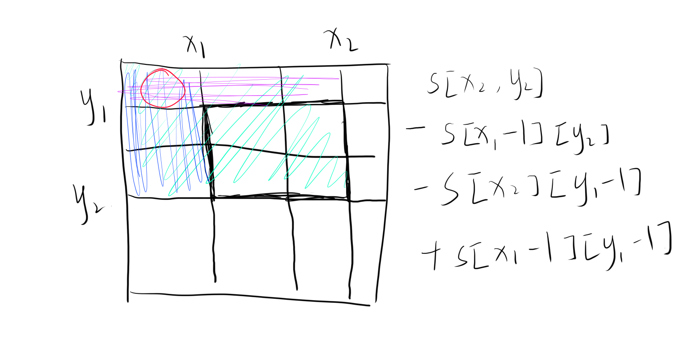
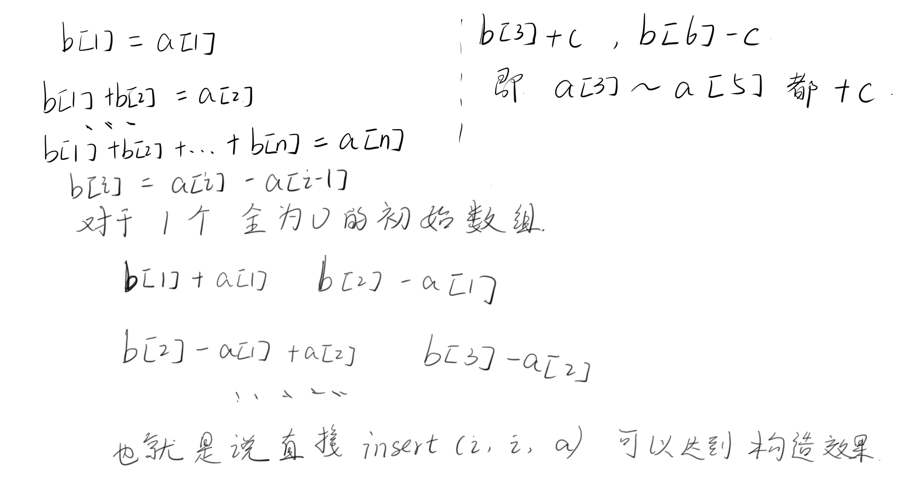

前缀和与差分
前缀和与差分
前缀和
前缀和一般用于快速求出某段区间的和
前缀和分为一维与二维（子矩阵的和）两种
前缀和
1 | for(int i=1;i<=n;i++) s[i]+=s[i-1]; |
关键代码就一行没什么好说的
子矩阵的和
1 | s[i][j] = a[i][j] + s[i-1][j] + s[i][j-1] - s[i-1][j-1]; //求和 |


注意调用前缀和数组下标从1开始
差分
差分就是前缀和的逆运算
差分后的数组进行前缀和操作后可以得到原数组
差分主要用于对一段区间的数据进行高效操作
差分核心操作：
1 | void insert(int l, int r, int c){ |
构建差分数组：
1 | for (int i = 1; i <= n; i ++ ) insert(i, i, a[i]); |

或者可以这样理解
insert(): 在区间[l,r]的原数组插入c,而不影响其他区域
因此 insert(i,i,a[i]) 也就是在[1,1],[2,2] … 插入原数组的值而不影响其他区域
All articles in this blog are licensed under CC BY-NC-SA 4.0 unless stating additionally.
Related Articles